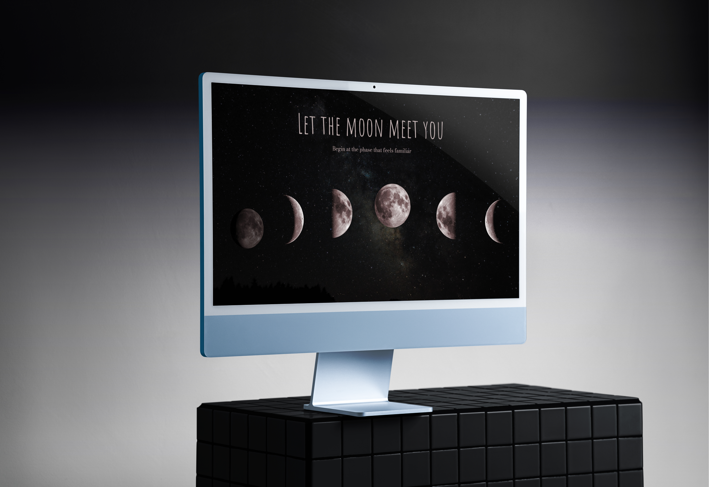
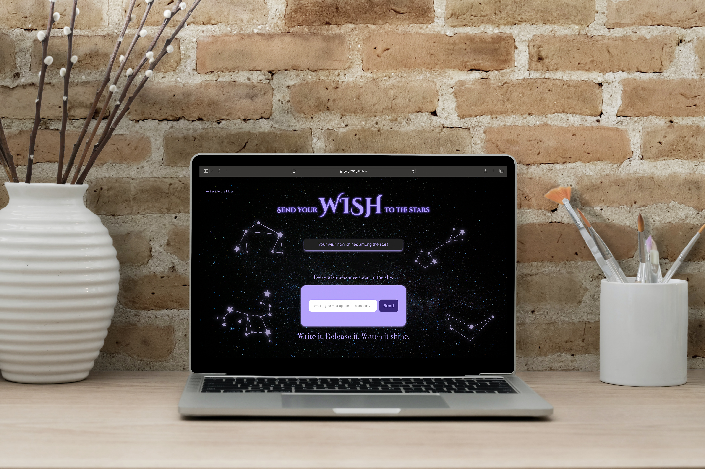
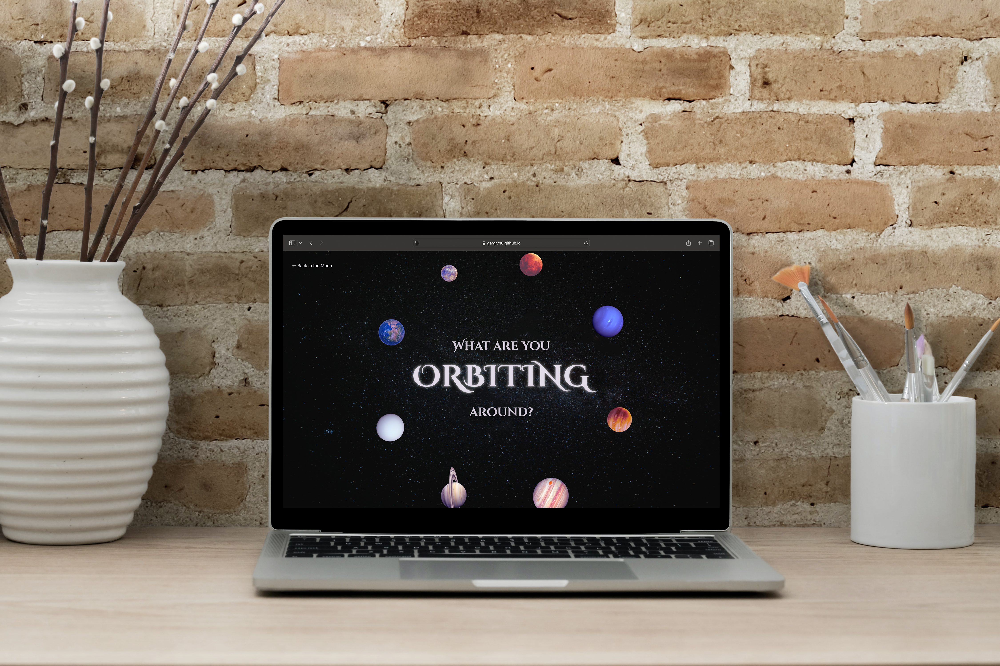
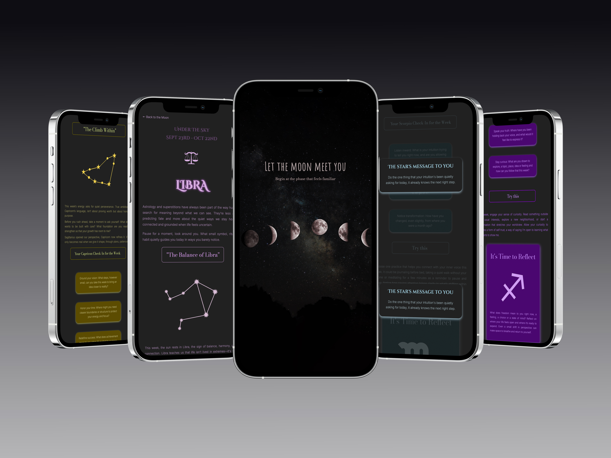
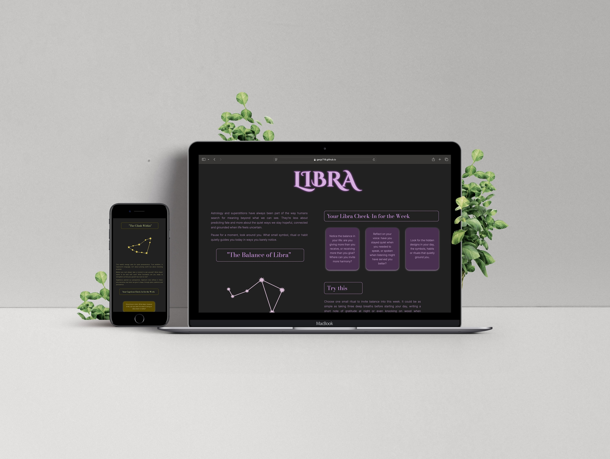

Under the Sky
An Astrology Website
This website uses astrology as a language for reflection rather than prediction. Through calm visuals, gentle interactions and planetary metaphors, it invites users to slow down, notice their inner patterns and consider what they are moving towards, turning the sky into a quiet space for self-awareness.

Concept
I chose this topic because astrology, to me, has never been about predicting what comes next, but about understanding what’s already happening within. It offers a quiet way to pause, acknowledge emotions and notice patterns that often go unspoken. Through this project, I wanted to translate that reflective quality into a digital space, using design and interaction to encourage awareness, presence and self-connection.
Mockups
Each page was designed differently, with its own interaction and pacing, to create moments users could connect with and reflect on. The mockups present the website in a realistic context, emphasizing how the experience translates beyond the screen.


Mobile Version
Responsive to a 740px Mobile Screen
The experience was designed primarily for desktop, with
responsive adjustments for mobile devices to ensure clarity and continuity across screen sizes.

Initial Drafts
Final Outcome
The final outcome begins with information-led pages that use illustration, color and hierarchy to ground the user. As the experience progresses, the design shifts focus away from content and towards the user, encouraging quiet reflection on the emotions, ideas and patterns explored throughout the journey.

Reflection
This project showed me how digital design can move beyond function to create space for reflection and emotion. Through building each page, I learned how interaction, motion and storytelling shape how a user feels as they move through a site. Designing with intuition reinforced my belief that even simple interactions can invite connection, emotional clarity and feel deeply personal.